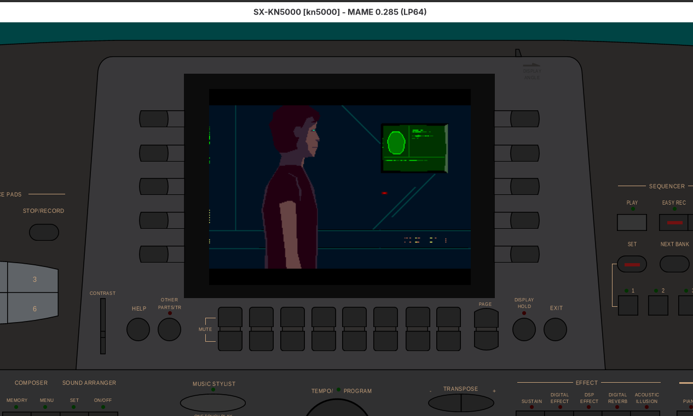
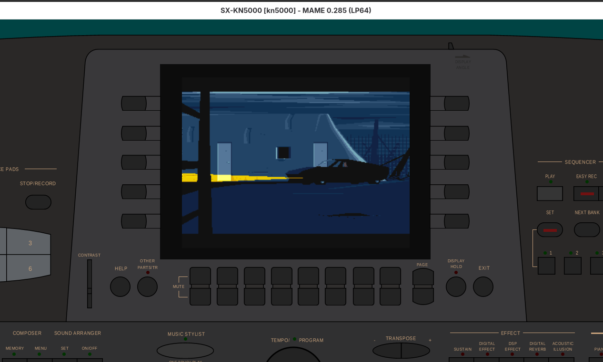
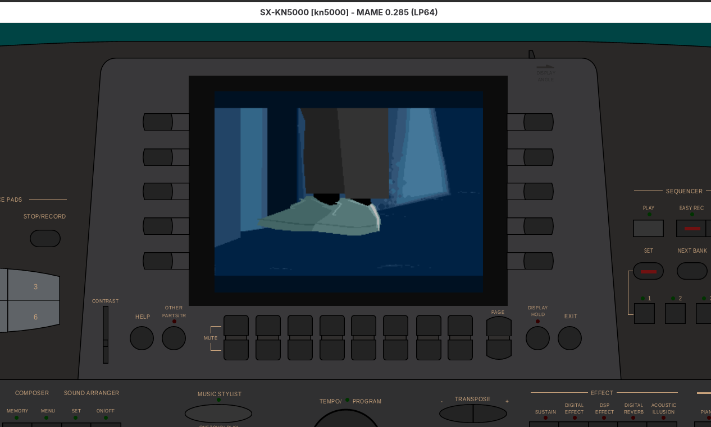

Another World on KN5000
A port of Eric Chahi's Another World bytecode VM to the Technics KN5000 arranger keyboard.
github.com/felipesanches/kn5000-anotherworld
Screenshots
Running in MAME 0.285 with the KN5000 driver.



Hardware
- Target CPU
- TMP94C241F (TLCS-900/H2) @ 16 MHz (MAME) / 25 MHz (real)
- Display
- MN89304 VGA LCD controller, 320x240 @ 8bpp
- Assembler
- ASL Macro Assembler (
cpu 96c141) - VM origin
- Big-endian Amiga/68k bytecode on little-endian TLCS-900
- Status
- Intro plays fully: polygons, palette, text, timer-based frame pacing
Plans & Design Documents
Plan
Polygon Rendering Fix
Fix drawLine off-by-one, fillPolygon overflow, and drawPoint corruption that caused blank screens.
Plan
Zoom Rendering Fix
Fix case 2/3 opcode handling and 16-bit zoom truncation causing Lester to shrink/grow incorrectly.
Plan
Timer-Based Frame Timing
Replace busy-wait loop with T0/T1 cascade timer, prescaler fix, and overrun detection.
Reference
Timer Configuration Details
Hardware timer setup, MAME vs datasheet differences, prescaler divisions, ISR design.
Code Reviews
Review
VM Opcodes vs MAME HLE
Feb 9 — Systematic comparison of all opcodes against the reference MAME HLE implementation. Found 20 issues.
Review
Polygon Rendering Glitches
Feb 10 — Deep review of drawPoint, fillPolygon, readVertices, calcStep against Fabien Sanglard's reference.
Review
Grey Screen Investigation
Feb 10 — Discovered the grey screen was correct behavior (4-bit DAC). Led to palette and rendering fixes.
Development Log
Full conversation transcripts from all Claude Code sessions, rendered as a browsable viewer.
Commit Timeline
Feb 9, 2026
Initial commit: KN5000 Hello World custom boot ROM
6caf1d1
Feb 9
Add MAME ROM set generation, VGA refactor, interrupt vector table
Feb 9
Fix VGA_Setup, font lookup, boot hexdump display
Feb 9
Set up Another World VM project with dual-target build
3458463 + b7cb21a
Feb 9
Add asset build pipeline for bitmap resources
496159e
Feb 9
Fix all 20 VM issues from code review
1679d39
Feb 10
Fix palette, polygon raster, thread init, DRAM layout
eac6f81
Feb 10
Fix GET_PAGE_PTR, SETUP_PALETTE index extraction, palette 0 black screen
fe3b36f .. 45ef21a
Feb 10
Fix palette colors: MN89304 DAC is 4-bit, not 6-bit
a8a13ec
Feb 10
Fix polygon rendering: drawLine, fillPolygon, drawPoint
6dd5c62 + 4565a8c
Feb 10
Add timer-based frame timing with prescaler fix
558e3d5
Feb 10
Fix polygon zoom: 16-bit zoom, case 2/3 opcode handling
3d65a8e
Feb 10
Fix VM freeze in text scenes: save/restore XIX in DRAW_STRING
bd01da6
Feb 10
Entire intro plays perfectly